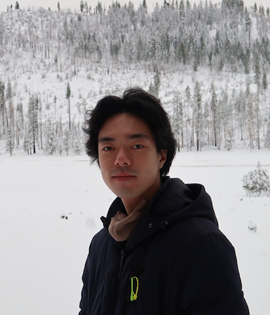

Hi, I'm Han.
ch.robert.26 at gmail.com
Han is currently a Member of Technical Staff @ OpenAI.
Before joining OpenAI:
Han worked at Verkada. As the first IC on data-platform team, Han contributed to building PB scale IoT data-platform from scratch. Han recently joined Search & CV team, working on product side of Verkada.
Han graduated from University of Wisconsin-Madison in 05/2021 (B.S.), he majored in computer sciences, statistics, and philosophy.
Outside of work, Han enjoys skiing, tennis, cycling.
